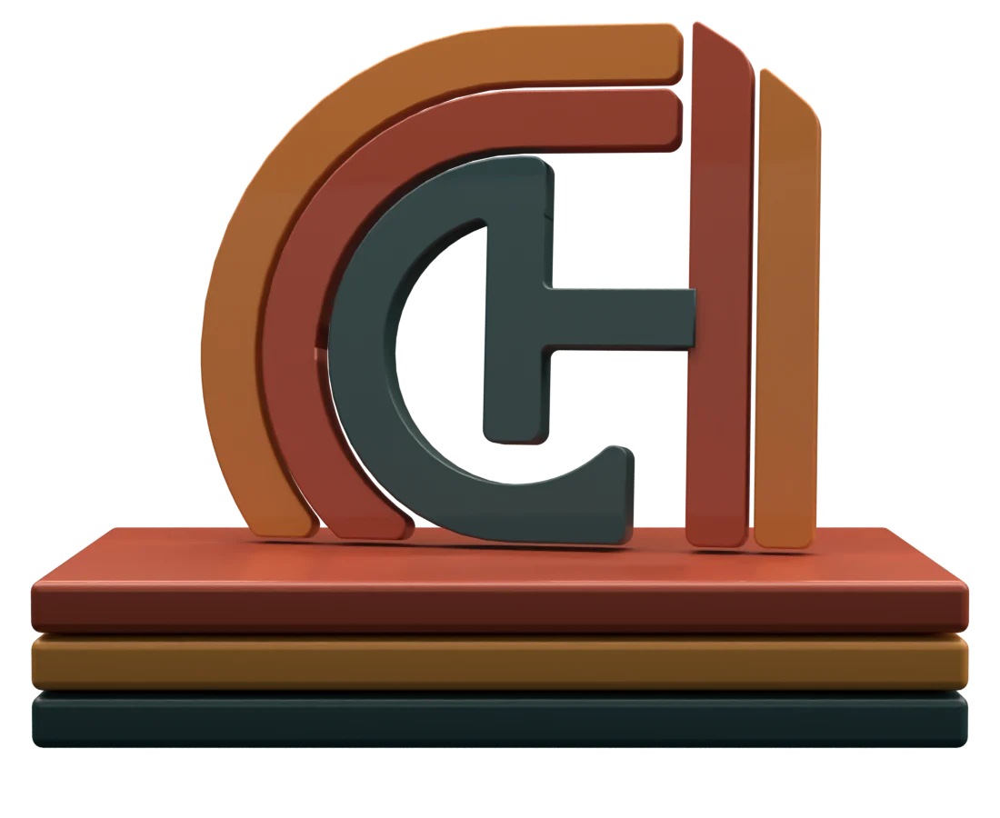
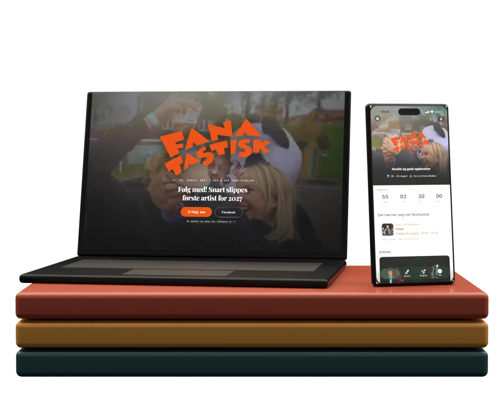
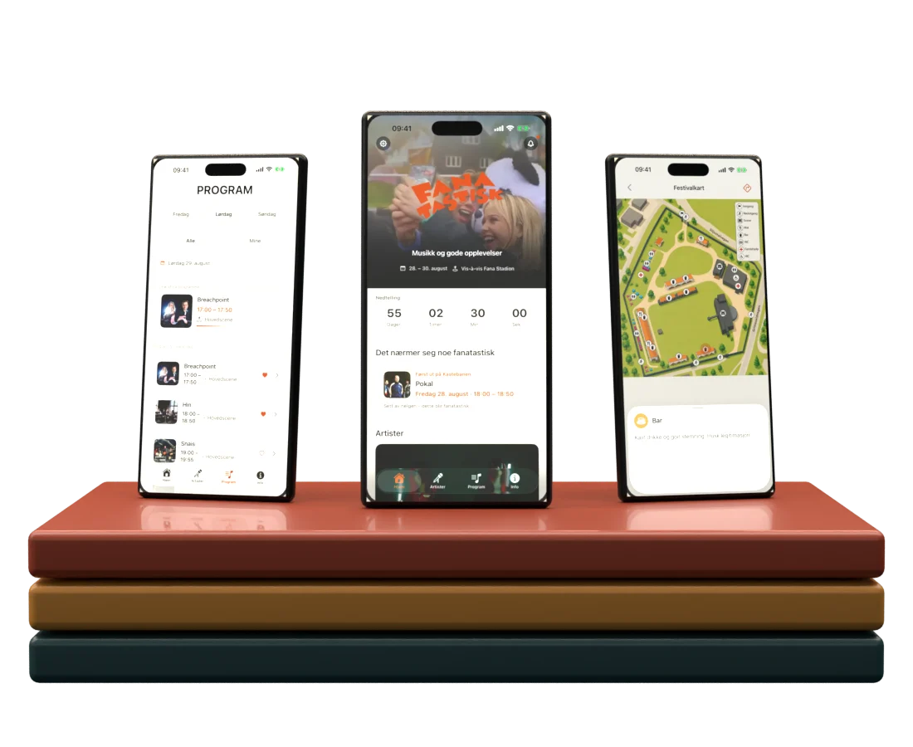
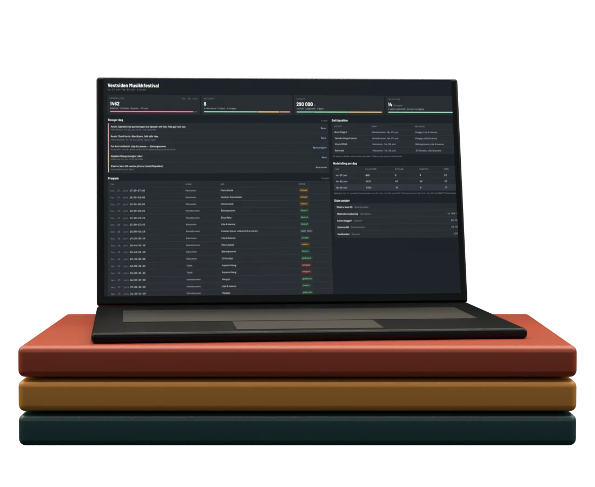

Nettsider som forteller historier
Du ruller, og siden svarer. Historien din fortelles i den rekkefølgen du vil ha den.
Jeg er Christian Hermansen. Jeg bygger nettsider, apper og digitale verktøy for arrangører, lag og små bedrifter.
Fortell hva du trenger
Tegnet for deg, og laget for telefon først. Du redigerer innholdet selv.
Nettsiden til musikkfestivalen i Fana hadde 5 558 besøkende i festivaluken. Festivalen redigerer alt selv.
Åpne fanatastisk.no
For iPhone, eller rett i nettleseren. Én ting som løser ett problem godt.
Program, kart og favoritter med varsel før konsertstart. Godkjent av Apple på under et døgn.
Se den i App Store
Små verktøy som tar jobben ingen har tid til.
Et system for festivaldrift, i pilot hos styret i Fanatastisk. Skjermbildet viser demodata.
Åpne zempel.no
Du ruller, og siden svarer. Historien din fortelles i den rekkefølgen du vil ha den.
Driver du noe som gjør det bedre for andre, kan du søke om hjelp uten regning. Ett prosjekt om gangen. Det er måten jeg gir tilbake på.
Du forteller hva som plager deg. Jeg spør mer enn jeg selger.
Du får se tre retninger før noe bygges, og velger selv.
Du følger med underveis og ser det vokse fram.
Du får opplæring og nøklene. Etterpå driver du det selv.
Send en e-post. Jeg svarer selv.
epost@christianhermansen.no